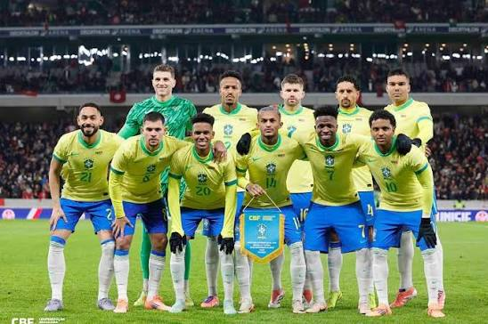

O Brasil ficou no Grupo C, ao lado de Marrocos, Haiti e Escócia.A seleção, comandada por Carlo Ancelotti,terminou a primeira fase em primeiro lugar,com 7 pontos.
O Brasil terminou o torneio na 11ª colocação entre as 48 seleções. É o pior resultado do país desde 1996, quando também ficou em 11º.
A Noruega, que eliminou o Brasil, terminou a Copa em 5º- a melhor campanha da história da seleção norueguesa.
Para saber mais sobre torneio, visite o site oficial da FIFA.